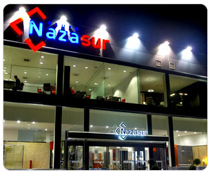

Dentro de este diseño de vanguardia, se plantea una evolución partiendo de los conocimientos de grandes arquitectos como Le Corbusier, el cual desde su Unidad de Habitación en Marsella (edificio sin duda singular para la evolución de la Arquitectura Contemporánea) plantea el tratamiento de la vivienda con carácter comunitario donde los apartamentos se adecuan realmente a las necesidades de las personas.
Se pretende que tras este proceso de aprendizaje se recoja y permita ofrecer a sus clientes, en gran medida, las principales características de este tipo de viviendas en las cuales predomina la calida en beneficio del usuario. Nuestros acabados en inmejorables calidades hacen disfrutar al cliente de sus SUEÑOS:
“la arquitectura, y en consecuencia, todo objeto creado por el hombre, debe impactarnos no sólo a nivel anímico o mental sino también a nivel más físico o corporal"
Le Corbusier
Grupo NAZASUR por tanto recoge esa esencia en todas y cada una de sus empresas, satisfaciendo y adecuándose a las necesidades actuales de sus clientes para adaptarse a las realidades sociales del momento.
